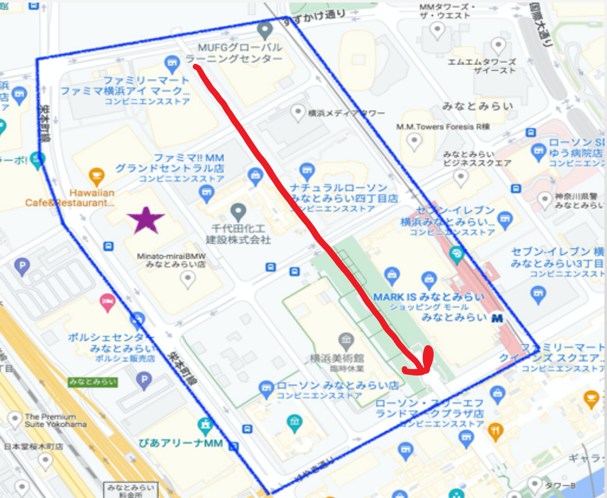

髪の観察
観察方法
観察場所：地図上の赤い矢印

調査項目と基準
男女それぞれ髪を染めているか染めていないか
染めている、染めていないの基準は
黒髪→染めている
黒髪以外→染めていない
として観察
帽子をかぶっているなど判断不明な場合はその他としてカウント
観察結果
カラー
黒
帽子
男
3(7%)
34(77%)
7(16%)
女
26(46%)
29(51%)
2(3%)
男性44人 女性57人
カラーとしている人のほとんどが男女ともに茶髪だった
派手な髪色の人は女性にはおらず、男性で2人ほどだった
考察・振り返り
もっといろいろな髪色の人が見られると予想していたが、茶髪、黒髪がほとんどであった。
→平日の昼間だったので学生や若者が少なかったのではないか
日時を変えたらだいぶ結果が変わってきそう
男女で比較すると男性の髪染め率はかなり低かった。女性は茶色に染めている人が多かった。
→女性は微妙な色の違いにこだわり、男性は黒髪か派手髪か極端になる傾向があるのでは。
髪色の違い、特に茶髪と黒髪は、動画での判別が難しかった。
色味など細かい違いを観察する場合は、肉眼での定点観察の方が適していると思った。
前のページに戻る